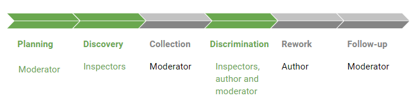

It is a multi-player game mode that aims simulate a software inspection process proposed by Sauer.  The stages in color green, are the stages included in InspectorX 2.0
The stages: Follow-up and rework are not included
The player can assume two roles: Moderator and Inspector
Moderator: Responsible for the planning and Discrimination stages
Inspector: Responsible for the Detection and Discrimination stages